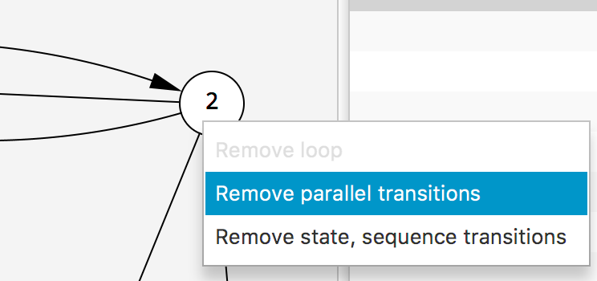
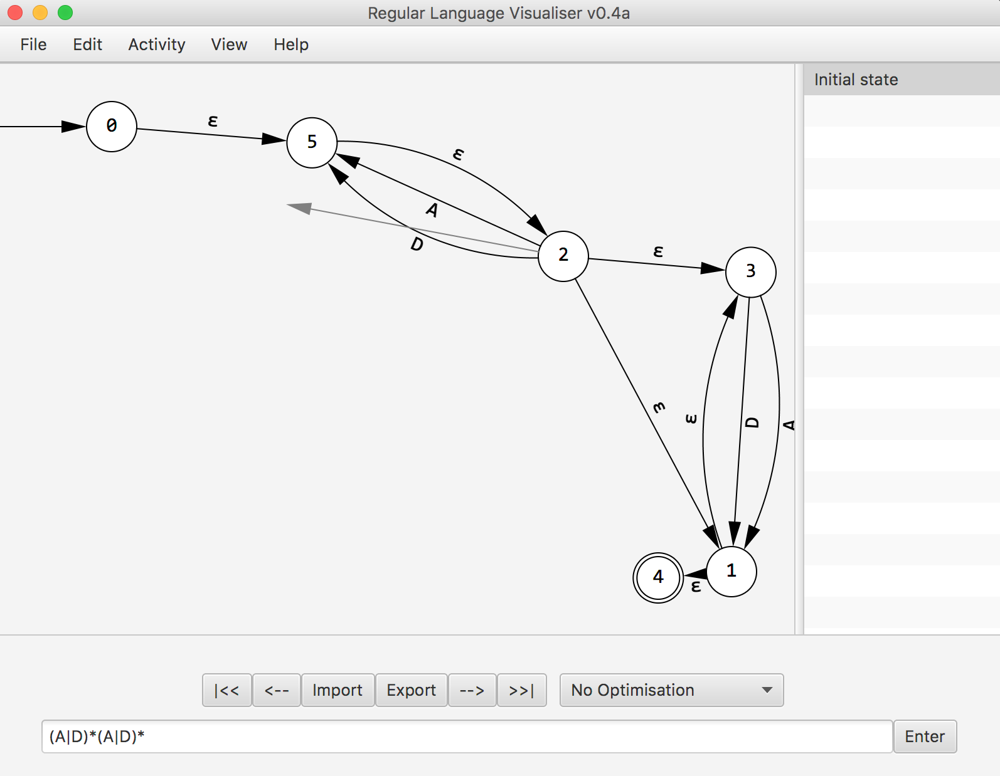
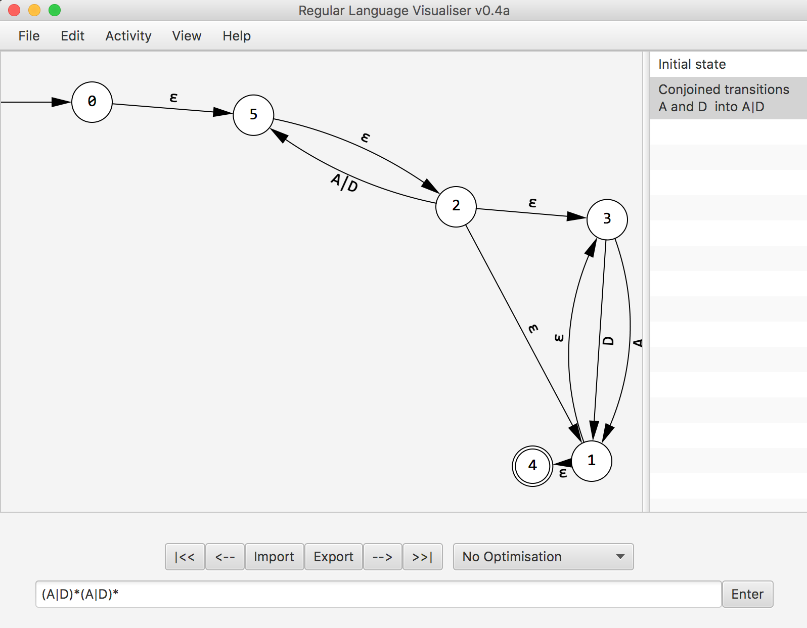
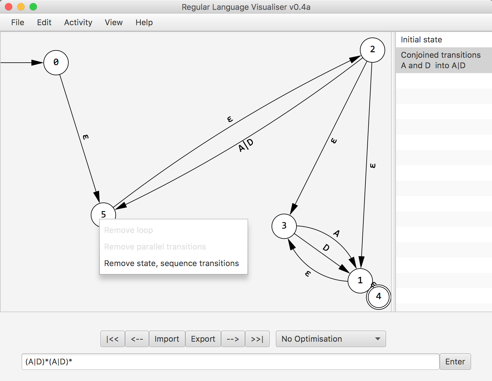
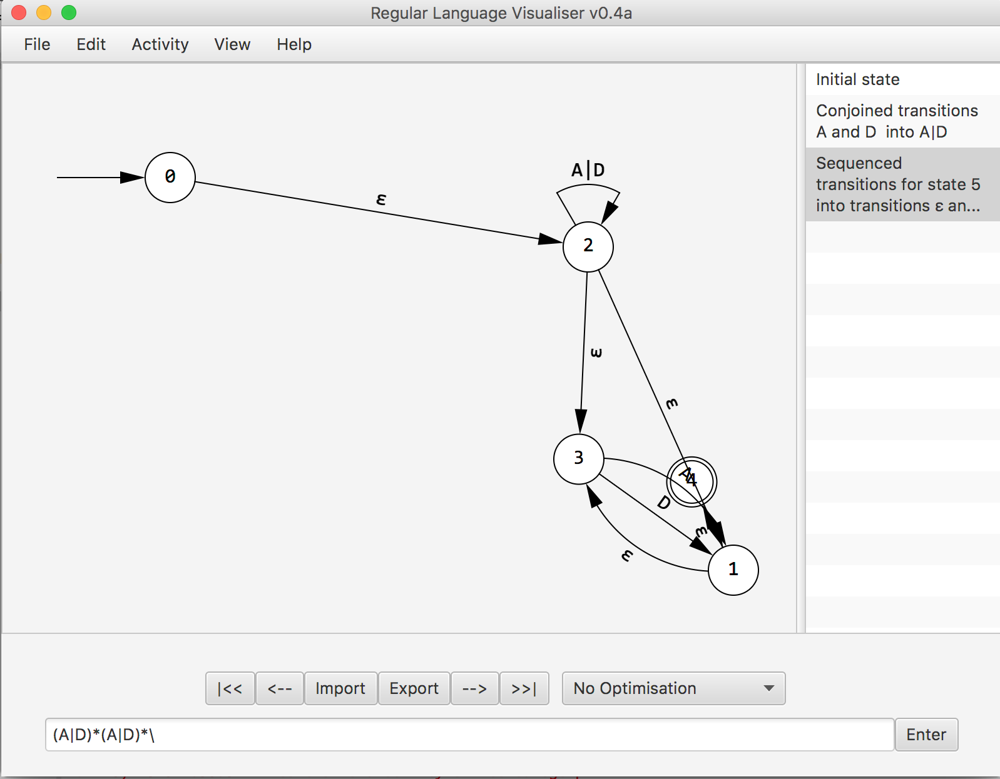
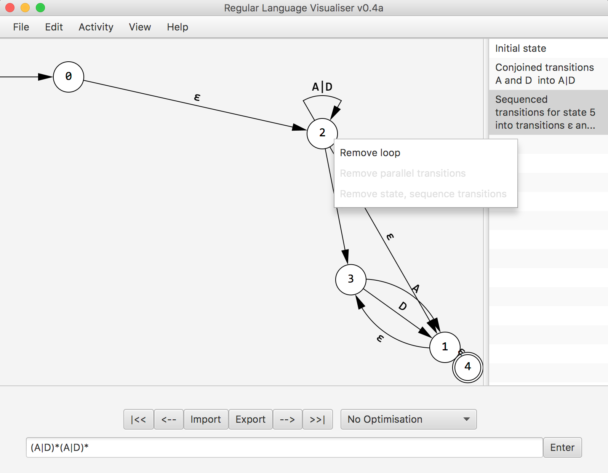
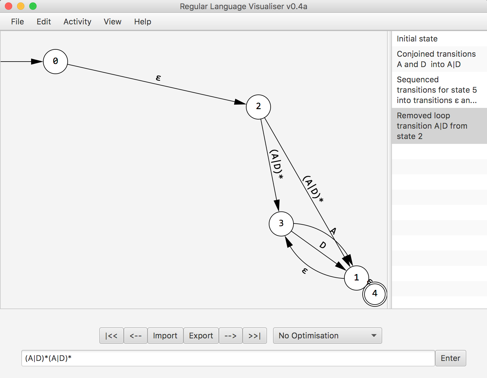

STEP 2. Enter your regular expression, into the text area
and press enter
STEP 3a. once the graph appears, it will already be broken down right clicking on a node opens some options: "Remove parallel transitions" will create a temporary arrow to choose which node
to remove transitions between.



STEP 3b. Right clicking on a node opens some options: "Concatenate transitions" will concatenate two transitions.


STEP 3b. Right clicking on a node opens some options: "Remove loop" will remove looped transition.

